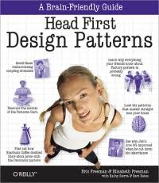

SYLLABUS
CSE219 - Fall 2018
Computer Science III
https://ppawar.github.io/CSE219-F18/index.html
Course Description
Development
of the basic concepts and techniques from Computer Science I and II into
practical programming skills that include a systematic approach to program
design, coding, testing, and debugging. Application of these skills to the
construction of robust programs of thousands of lines of source code. Use of
programming environments and tools to aid in the software development process. (https://sunyk.cs.stonybrook.edu/students/Undergraduate-Studies/courses/CSE219)
Course Topics
·
Programming style and its
impact on readability, reliability, maintainability, and portability.
·
Decomposing problems into
modular designs with simple, narrow interfaces.
·
Determining the proper
objects in an object-oriented design.
·
Selecting appropriate
algorithms and data structures.
·
Reusing code, including
external libraries designed and built by others.
·
Learning systematic testing
and debugging techniques.
·
Maintaining a repository of
code during incremental development of a software project.
·
Learning how to use threads
to synchronize several tasks.
·
Improving program performance.
·
Making effective use of a
programming environment, including:
·
Syntax-directed editor
·
Build tools
·
Debugging tools
·
Testing tools
·
Source code management tools
·
Profiling tools
Prerequisites
C or higher
in CSE 214 and CSE major or ECE major.
In more detail,
you are expected to have the following knowledge and skills at the beginning of
the course:
·
Ability to write programs of
a few hundred lines of code in the Java programming language.
·
Understanding of fundamental
data structures, including lists, binary trees, hash tables, and graphs, and
the ability to employ these data structures in the form provided by the
standard Java API.
·
Ability to construct simple
command-based user interfaces, and to use files for the input and output of
data.
·
Mastery of basic mathematical
and geometric reasoning using pre-calculus concepts.
Staff
Instructor: Pravin
Pawar
Office: B424, Department of Computer Science, SUNY Korea
Office Hours: Mon: 3:00-5:00PM, Wed: 10:30-12:30PM, 3:00-5:00PM
Email: pravin.pawar@sunykorea.ac.kr
Phone: +82-032-626-1227
Class Time and Place
- Recitation: Mo
5:00PM – 5:53PM, B103
- Lectures: TuTh
5:00PM - 6:20PM, B206.
Textbook
- Head First Object Oriented Analysis
and Design by Brett McLaughlin, Gary Pollice,
David West Published by O'Reilly Media, Inc., 2006.

· Head
First Design Patterns by Eric T Freeman, Elisabeth Robson, Bert Bates, Kathy
Sierra, Published by O'Reilly Media, Inc., 2004.
Lecture Notes and Reading
Assignments
The following course schedule
provides topics, problem sets, quiz dates, and exam dates. Check back
frequently.
|
Week/Day |
Lecture Topics/Lab |
Tests/Videos/Slides |
|
W1:
8/28 |
Course
overview |
|
|
W1:
8/30 |
Discussion
on course projects |
|
|
W2:
9/3 |
Recitation
|
|
|
W2:
9/4 |
Chapter
1 - textbook |
|
|
W2:
9/6 |
Chapter
1 - textbook |
|
|
W3: 9/10 |
Recitation |
|
|
W3:9/11 |
GUI
with JavaFX |
|
|
W3: 9/13 |
JSON
and XML |
|
|
W4: 9/17 |
Recitation |
|
|
W4: 9/18 |
Event
Programming |
|
|
W4: 9/20 |
Project review 1 |
|
|
W5: 9/24 |
Chuseok |
|
|
W5: 9/25 |
Chuseok |
|
|
W5: 9/27 |
Adjustment day: no classes |
|
|
W6: 10/1 |
Recitation
(debugger) |
|
|
W6: 10/2 |
Graphics
and GUI |
|
|
W6: 10/4 |
|
|
|
W7: 10/8 |
Adjustment day: no classes |
|
|
W7: 10/9 |
Hangul day: no classes |
|
|
W7: 10/11 |
Quiz2 |
|
|
W8: 10/15 |
Recitation
(threads and timers) |
|
|
W8: 10/16 |
Multithreading
issues |
|
|
W8: 10/18 |
Midterm Exam |
|
|
W9: 10/22 |
Recitation |
|
|
W9: 10/23 |
Object
Oriented Design using UML |
|
|
W9: 10/25 |
UML
continued |
|
|
W10: 10/29 |
Recitation |
|
|
W10: 10/30 |
Design
review |
|
|
W10: 11/1 |
|
|
|
W11: 11/5 |
Recitation |
|
|
W11: 11/6 |
Project review 2 |
|
|
W11: 11/8 |
Test
Driven Development |
|
|
W12: 11/12 |
Recitation |
|
|
W12: 11/13 |
Test
Driven Development continued |
|
|
W12: 11/15 |
Load
and performance testing |
Apache
JMeter tutorial |
|
W13: 11/19 |
Recitation |
|
|
W13: 11/20 |
Introduction
to design patterns |
Quiz
3 |
|
W13: 11/21 |
Creational
design patterns |
|
|
W14: 11/26 |
Recitation |
Design
patterns |
|
W14: 11/27 |
Structural
design patterns |
|
|
W14: 11/29 |
Behavioral
design patterns |
|
|
W15: 12/3 |
Recitation |
Netbeans
code profiling |
|
W15: 12/4 |
Introduction
to web development |
|
|
W15:12/6 |
Introduction
to Android applications development |
|
|
W16: 12/9 |
Recitation |
Quiz
4 |
|
W16:12/10 |
Project review 3 |
|
|
W16:12/11 |
Review
for Final |
|
Grading Scheme and Grades
Calculation
The course provides a total
of 500 points distributed across the below categories. Your grade in the course
will be based on the following work:
· Homework
assignments = 15% (75 points)
· Recitations
= 10% (50 points)
· Midterm
exam = 20% (100 points)
· Final
project = 20% (100 points)
· Final
exam = 30% (150 points)
· Class
attendance/participation = 5% (25 points)
Do not miss the
exams. Make-up exams will be given only in extenuating circumstances (e.g.,
doctor's note stating that you were ill and unfit to take the exam). Students
who miss an exam for a valid reason may need to take a make-up exam; specific
arrangements will be made on a case-by-case basis.
The final grade is
based on the accumulated points from all quizzes, exams, and assignments (with
the entire class comprised of 500 points). Letter grades are given on the
following scale:

Note CEAS Policy: The Pass/No Credit (P/NC)
option is not available for this course.
Disability Support Services
(DSS) Statement:
If you have a physical, psychological, medical or learning
disability that may impact your course work, please contact Disability Support
Services, ECC (Educational Communications Center) Building, room 128, (631)
632-6748. They will determine with you what accommodations, if any, are
necessary and appropriate. All information and documentation is
confidential.
Students who require assistance during emergency evacuation are encouraged to
discuss their needs with their professors and Disability Support Services.
For procedures and information go to the following website: http://www.stonybrook.edu/ehs/fire/disabilities
Academic Integrity Statement:
Each student must pursue his or her academic goals honestly and
be personally accountable for all submitted work. Representing another person's
work as your own is always wrong. Faculty are required to report any suspected
instances of academic dishonesty to the Academic Judiciary. Faculty in the
Health Sciences Center (School of Health Technology & Management, Nursing,
Social Welfare, Dental Medicine) and School of Medicine are required to follow
their school-specific procedures. For more comprehensive information on
academic integrity, including categories of academic dishonesty, please refer
to the academic judiciary website at http://www.stonybrook.edu/commcms/academic_integrity/index.html
Critical Incident Management Statement:
Stony Brook University expects students to respect the rights,
privileges, and property of other people. Faculty are required to report to the
Office of Judicial Affairs any disruptive behavior that interrupts their
ability to teach, compromises the safety of the learning environment, or
inhibits students' ability to learn. Faculty in the HSC Schools and the School
of Medicine are required to follow their school-specific procedures.
Academic Dishonesty:
You may
discuss the homework in this course with anyone you like, however each
student's submission must be ones
own work.
The College
of Engineering and Applied Sciences regards academic dishonesty as a very serious
matter, and provides for substantial penalties in such
cases. For more information, obtain a copy of the CEAS guidelines on academic
dishonesty from the CEAS office.
Be advised that any evidence of academic dishonesty will be treated with utmost seriousness. If you have a situation that may tempt you into doing something academically dishonest, resist the urge and speak with your instructor during office hours for help.